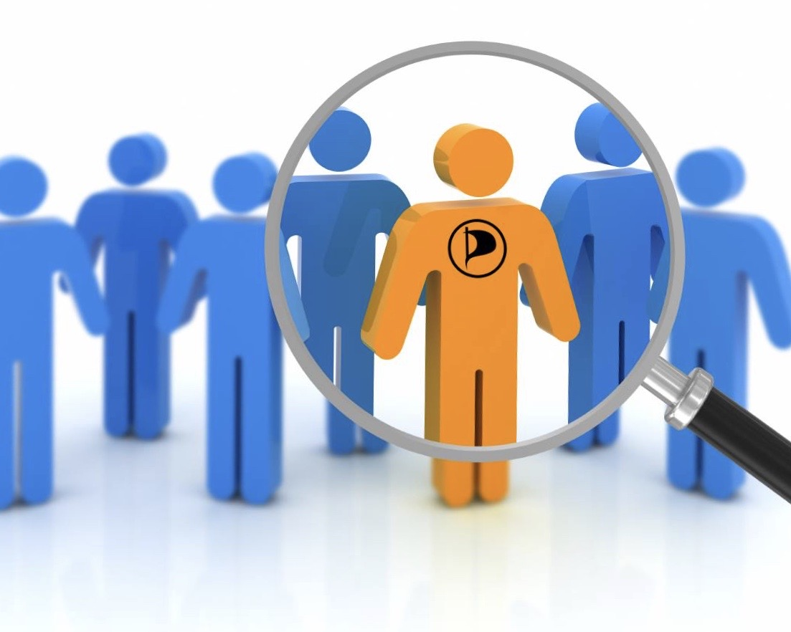

-
Den nye loven vil svekke demokratiet
Nå må vi sammen forsvare personvernet vårt.«Enhver er uskyldig inntil det motsatte er bevist.» Dette er et demokratisk prinsipp som vi verdsetter i Norge. Om den nye etterretningsloven blir vedtatt, blir vi frarøvet denne retten.
Les mer -
En visjon om økonomisk frie nordmenn
Når nordmenn styres.Hvis piratpolitikk handler om en ting, så er det for meg frihet.I dag lever vi i et samfunn hvor mye av økonomien styres ovenfra.Enten det er store nasjonale og internasjonale selskaper.
Les mer -
MEDLEMSPODKAST: PIRATFOLKA
«Piratfolka» er en medlemsskapt podkast om piratpolitikk i Norge og internasjonalt. Offisiell podkast fra sentralstyret kommer senere.
Finn alle episoder her
-
I dag er det et år til stortingsvalget 2021.
Fornuft - Frihet - Fremgang
Bli medlem! Vipps 99 kroner til #118822
Les mer -

Bli vår kandidat ?
Det er fremdeles muligheter for å stille som kandidat til valgliste(r) til kommune- og fylkestingsvalget i år. Piratpartiet står for: - fri kultur og kunnskap - åpenhet og ærlighet - rett til privatliv og nei til overvåkning - menneskerettigheter og rettferdighet - reform av demokratiet og kamp mot korrupsjon - blokkuavhengige løsninger og innovasjon
Les mer -
Piratpartiet gjorde brakvalg på skolene
Ungdommen har allerede omfavnet partiet.Til tross for partiets svært unge alder viser det seg at det allerede er ganske så populært, spesielt blant den yngre garden. Nå som skolevalget er avholdt kan Piratpartiet nemlig melde om overraskende høy oppslutning hos elevene.
Les mer
Optimisme og gjestetaler fra Tsjekkia på digitalt landsmøte

Piratpartiet har hatt noen digitale ekstraordinære landsmøte på nettforum før, men for første gang har det vært et ordinært landsmøte med videokonferanse.
Styret fikk dramatiske endringer, der den til nå lengstsittende lederen av Piratpartiet, Thomas Gramstad, etter 3 år gav videre stafettpinnen til Svein Mork Dahl, som har vært politisk nestleder i samme perioden. Thomas er fortsatt med i styret som 1. vara. Styremedlem Linda Tørklep rykka opp til vervet som politisk nestleder. Styret fikk ellers to helt nye faste medlemmer, Thomas Bestorp og Morten H. Jakobsen. William T. Svendsen, leder i Unge Pirater, kom inn i styret som andre vara, og til nå faste styremedlem Kari Toreskaas er fremdeles med som 3. vara.
Les mer
PIRATKODEKSEN
I. PIRATER ER FRIE
Pirater liker frihet, uavhengighet og selvbestemmelse, og misliker blind lydighet. De står for individets rett til å ta valg basert på informasjon. Pirater tar ansvaret som frihet forutsetter.
II. PIRATER RESPEKTERER PRIVATLIV
verner om den personlige sfære. De kjemper mot en voksende overvåkings-mani fra både stat og privat næringsliv, fordi det hemmer individets frie utvikling. Et fritt og demokratisk samfunn er umulig uten privatliv og frihet fra overvåkning.
III. PIRATER ER KRITISKE
Pirater er kreative, nysgjerrige, og slår seg ikke til ro med det bestående. De utfordrer systemer, ser etter svake sider, og finner løsninger. Pirater lærer av sine feil.
IV. PIRATER ER RETTFERDIGE
De holder sitt ord. Solidaritet er viktig for å oppnå felles mål. Pirater er en motvekt til “la det skure”-holdningen som gjennomsyrer samfunnet, og har mot til å ty til handling når det er nødvendig.
V. PIRATER RESPEKTERER LIV
Pirater er fredelige. Derfor avviser de dødsstraff og er imot ødeleggelse av vårt miljø. Pirater står for bærekraftig natur- og ressursforvaltning. De aksepterer ikke patent på liv.
VI. PIRATER IVRER ETTER KUNNSKAP
Tilgang til informasjon, utdannelse, kunnskap og vitenskapelig forskning må være ubegrenset. Pirater støtter fri deling av kultur og fri programvare.
VII. PIRATER ER SOLIDARISKE
Pirater respekterer menneskelig verdighet. De dedikerer seg til et samfunn forenet i solidaritet, hvor de sterke forsvarer de svake. Pirater står for en objektiv og rettferdig politisk kultur.
VIII. PIRATER ER INTERNASJONALE
Piratene er en global bevegelse. De tar utbytte av mulighetene som Internett tilbyr, og er derfor i stand til å tenke og handle uten grenser.
Kontakt oss
998 732 115post@piratpartiet.no
Piratpartiet CSS Mailboks 49 Middelthunsgate 25 0368 Oslo